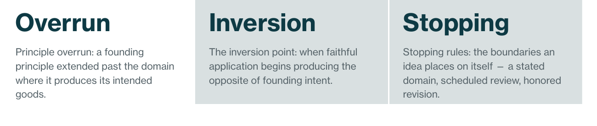
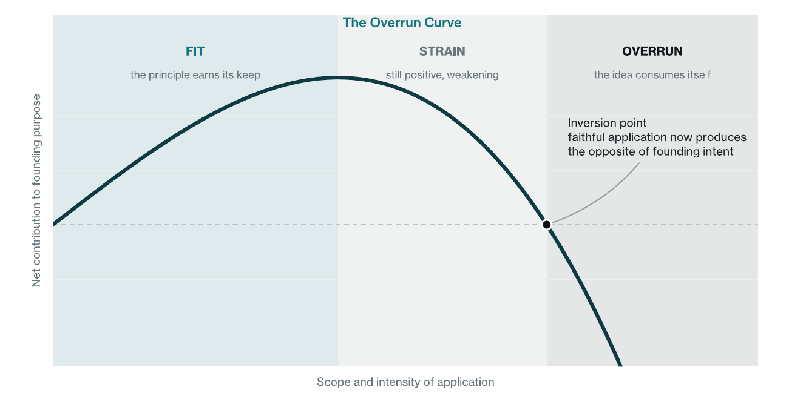
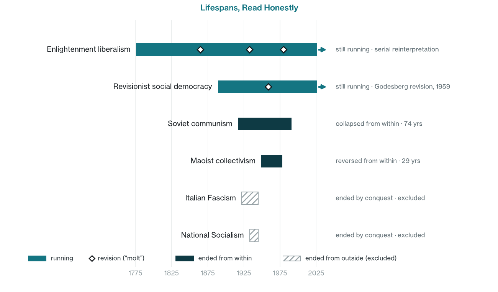
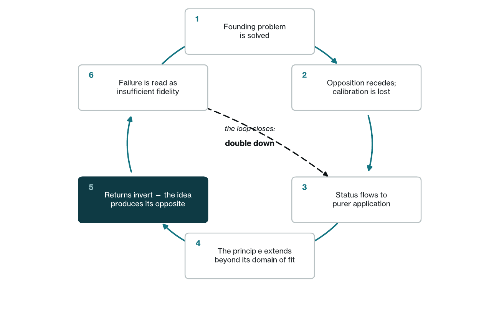
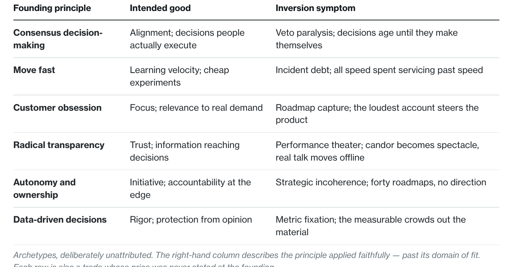

This is a synthesized insight essay, not original empirical research. It is written from the vantage of organizational diagnostics rather than academic philosophy: the author’s trade is measuring institutions, and the method here is that trade applied to the largest cases on record. It draws on published scholarship and the historical record – Ibn Khaldun, Michels, Merton, Schumpeter, Popper, Bell, Tainter, Deneen, Turchin, and others, listed in full in the notes at the back. Figures 1 and 3 are conceptual renderings. Figure 2 reads institutional lifespans at the level of governing regimes and named traditions and is illustrative rather than a dataset; reasonable readers can date inceptions and endings differently without disturbing the argument. Historical cases are compressed, with sources for each load-bearing claim in the notes. Terminal fidelity, principle overrun, and the inversion point are the author’s terms for the phenomenon, its mechanism, and its observable marker as defined here; no established use of terminal fidelity in this sense was found at the time of writing. A note on positioning: Monderman designs and sells the diagnostic instruments referenced in Section 11 and is therefore a market participant in the measurement this paper recommends. Readers should weigh the analytical claims here against that interest rather than treating the paper as neutral third-party research.
Every political, economic, and existential philosophy that takes institutional form carries, from its first day in power, the conditions of its own undoing. This is an old observation. This paper gives the pattern a name: terminal fidelity, the condition in which faithful application of a founding principle becomes the thing that destroys it. It then supplies the three things the observation has always lacked: a mechanism specific enough to watch in operation, a measurement honest enough to compare cases, and a design response that does something about it. The toolkit is organizational diagnosis, not political philosophy.
Terminal fidelity has a mechanism, and this paper calls it principle overrun: founding principles are rules for going that almost never contain rules for stopping. Every one of them is also announced as a solution when it is actually a trade: it buys one good by paying in another. The price is unstated at inception, and it compounds while the purchase diminishes. Once an idea wins, the opposition that once calibrated it recedes, and internal status begins flowing to whoever applies the principle most purely. Organizations already know one face of this pattern; they call it mission creep. Application extends past the domain where the principle produces its intended goods – until faithful application starts producing the opposite of founding intent. That crossing is the inversion point, and it is observable. The remedy is not moderation but engineering: stopping rules, the deliberate boundaries an idea places on its own application.

The paper reads the historical record through this lens. That record includes a natural experiment: two heirs of the same idea, with opposite attitudes toward revision, met their inversion points and made opposite choices. The paper then brings the argument down to where it can actually be used. Organizations are philosophies with payroll. They run the same loop on a faster clock, and unlike civilizations, they can be measured while the loop is running.
1.The Pattern Nobody Designs For
Refutation kills ideas before they take power. Application kills them after.
One qualifier, owed up front: refutation does not stop working after victory – it stops getting heard. Winning retires the opposition that carried the argument, and the deaths that remain are deaths by application.
The pattern shows up wherever a philosophy becomes an institution – a party, a state, an economy, a company, a way of life. The idea wins because it solves a real problem. It spreads because it keeps solving it. Then, at some point almost no one marks at the time, the idea keeps going after the problem has been solved. Its continued application begins to unmake the very goods it was created to produce. The scope of this paper is ideas about how power, production, and personal life should be organized – political, economic, and existential philosophies. Religious philosophies are set aside, not because the pattern spares them, but because claims settled outside history are difficult to score inside it.
The observation itself has a long pedigree. Ibn Khaldun watched dynasties dissolve the group cohesion that had built them. 1 Robert Michels found that parties founded to democratize society reorganize, with iron regularity, into oligarchies. 2 Robert Merton catalogued the ways deliberate action produces the opposite of what it intends. 3 Joseph Schumpeter argued that capitalism would be undone not by its failures but by its achievements. 4 Daniel Bell traced how the culture capitalism created eroded the discipline capitalism required. 5 Joseph Tainter showed complex societies collapsing under investments in complexity that had once been their advantage. 6 Most recently, Patrick Deneen argued that liberalism is failing precisely because it succeeded. 7
The intuition, then, is well established. Three things are missing. First, a mechanism specific enough that an observer could watch it operate rather than merely narrate it afterward. Second, a measurement honest enough to compare cases – one that does not credit an idea for being conquered, or for quietly swapping its contents while keeping its name. Third, a design response: if the seeds are real, are they fate, or are they an engineering problem?
A note on vantage. The author’s trade is organizational diagnosis, not political philosophy. That is the method here, not a limitation on it. The diagnostician’s habit is to name the mechanism, find a marker that can be observed while it is happening, and then design the countermeasure. That habit is exactly what the seeds-of-demise tradition has lacked, and this paper applies it upward: reading the history of ideas the way one reads an organization. The vocabulary that results – terminal fidelity, principle overrun, the inversion point, stopping rules – is the contribution on offer.
The paper’s answer comes down to one claim. The quality of an idea in power is not its purity, and it is not even its longevity. It is whether the idea knows where it stops.
2.Principle Overrun: Why Ideas Keep Going
Consider what a founding principle actually is: a rule for going. Expand liberty. Empower the worker. Move fast. Obsess over the customer. Trust the data. Founding documents state their purpose with great care. They almost never state a boundary. The principle carries its own accelerator and borrows its brakes from circumstance.
There is a second omission at inception, quieter than the missing boundary. A philosophy is announced as a solution; it is never announced as a trade. Yet a trade is what it is, every time. Individual liberty buys dynamism and pays in bonds. Consensus buys alignment and pays in speed. Customer obsession buys focus and pays in judgment. At the founding moment the purchase is enormous, and the price is small, deferred, and easy to read as noise. So the price goes unstated – and an unstated price is an unbooked liability. The costs compound quietly while the benefits, already banked, diminish at the margin. The social dynamics below explain why nobody stops the extension. The unbooked trade explains why the crossing was coming regardless. It is arithmetic, not accident.
While an idea is contested, circumstance supplies the brakes generously. Opponents are free error-correction. Every overreach gets punished, every misapplication gets publicized, and application stays disciplined because it has to survive contact with resistance. Then the idea wins – and the calibrating opposition recedes. What disciplines application now must come from inside the movement. And inside a winning movement, the incentives point the other way.
They point toward purity. In any institution organized around a principle, status flows to whoever applies the principle most faithfully. The ambitious discover that the fastest route upward is to find new territory for the principle to govern. This is not a defect of character; it is the ordinary economics of status. Peter Turchin’s work on elite overproduction describes the pressure at scale. When there are more claimants to status than positions to hold, people compete by escalating – and in an institution organized around an idea, escalating means purer, broader application. 8
Human psychology reinforces the pattern. In 2018, researchers led by David Levari showed experimentally that when instances of a problem become rarer, people expand their definition of the problem to keep finding it. 9 Subjects asked to identify threatening faces began classifying neutral faces as threatening once genuinely threatening ones grew scarce. Success, in other words, does not shrink the mandate; it stretches the definition. Nick Haslam has documented the same expansion in the real vocabulary of harm – concepts creeping outward to cover ever-milder cases. 10 Institutions already have a folk name for one face of this: mission creep. The term came out of military operations, but the experience is universal – the smallest team watches its charter stretch the same way an army watches its objectives multiply in a foreign war. Mission creep is overrun showing up in an organization’s scope. The same engine shows up in its culture as dogmatism and purity tests, and in its posture as inflexibility. Different symptoms, one mechanism – and all of them persist even though nearly everyone involved has learned, firsthand, that some stopping or pivoting mechanism is needed. A movement that wins does not conclude its work is done. It concludes, sincerely, that the problem was bigger than anyone knew.
One more force locks the door. By the time an idea has won, careers have been built on it, departments exist to advance it, and identities are invested in it. Proposing that the principle has a boundary now reads as betrayal – and so the people best positioned to see the limit are the people most punished for saying so.
The continued extension of a founding principle beyond the domain in which it produces its intended goods, sustained by purity competition and invested identity, in the absence of a stopping rule.
The consequence can be drawn as a single curve. Every principle has a domain of fit – the range of problems for which it genuinely is the answer. Inside that domain, application earns its keep. Past it, returns weaken, then turn negative. The curve does not merely flatten. It crosses zero.

3.The Inversion Point, Made Observable
“The seeds of its own demise” is a phrase that explains everything and therefore risks predicting nothing. To be useful, self-consumption needs an observable marker – a moment someone living through it could point to, not just a shape historians draw afterward.
The observable moment when an idea’s core institutions, faithfully applying the founding principle, begin producing the systematic opposite of its founding intent.
The load-bearing word is faithfully. Inversion is not corruption, and it is not hypocrisy. Corruption breaks the rules for private gain; hypocrisy preaches rules it privately breaks. Inversion is stranger than either: the rules themselves, sincerely applied, doing the damage. This is terminal fidelity in miniature – fidelity carried to the point where it turns fatal. That distinction is what makes the marker usable, because it changes the diagnostic question. The question is not has the idea been betrayed? Every movement asks that constantly. The question is has fidelity itself become the problem? Almost no movement can ask that unaided. There is also a colder way to say it. In the ledger terms of Section 2, the inversion point is where the running price of the founding trade overtakes what the trade still buys. That makes it bookkeeping – visible to anyone willing to keep the books.
Framed this way, a century of scattered observations turns out to describe one event, over and over. Michels’s iron law is the inversion point of organized democracy: the party built to distribute power concentrates it, precisely by organizing well. 2 Philip Selznick watched an agency founded on grassroots participation invert into an instrument of the local establishments it had co-opted. 11 Karl Popper’s paradox of tolerance – that unlimited tolerance destroys the tolerant – is not a paradox at all in this vocabulary; it is a stopping-rule statement. Tolerance without a boundary crosses its inversion point and begins manufacturing intolerance. 12 Modern examples follow the same pattern. Transparency gets extended until it produces performance rather than candor. Meritocracy gets extended until credentials become heritable and merit hardens into aristocracy. Protection gets extended until it manufactures the fragility it was built to prevent.
Readers of different political temperaments will recognize different overruns in that list. The mechanism does not take sides – which is modest evidence that it is, in fact, a mechanism.
“An idea is never more dangerous to itself than in the decade after it wins.”
4.Reading Lifespans Honestly
If ideas consume themselves, an actuarial question follows naturally: how long does each one last? Time from an idea’s first day in power to the day it consumes itself looks like a quality score – and at first glance the record cooperates. Enlightenment liberalism has run two and a half centuries. Soviet communism ran seventy-four years. Fascism, in Italy, ran twenty-three. But the raw clock misleads in three specific ways, and correcting for them is where the metric earns its keep.
Correction one: cause of death. Fascism did not consume itself; it was annihilated by an external coalition of armies. Its internal design – permanent mobilization, dependence on an ever-renewed enemy – very likely doomed it anyway. But conquest contaminates the clock. An idea ended from outside says little about how long it would have run on its own, so the conquered cases must be excluded from the comparison rather than quietly counted as self-consumption. The cleaner cases are the ones no invasion can explain: Soviet communism, which collapsed from within at seventy-four, and Maoist collectivism, reversed from within by its own party at twenty-nine.
Correction two: semantic drift. Is the liberalism of 2026 the same organism as the liberalism of 1776? The liberty John Locke argued for and the individualism of 2026 share a name and little else; the tradition has survived partly by serially reinterpreting itself – call each reinterpretation a molt. Raw duration therefore rewards adaptability, or vagueness, as much as soundness: a brand can outlive its contents. The honest reading credits the molts explicitly. As Section 8 will argue, a successful molt is what a stopping rule looks like from the outside.
Correction three: clock speed. Ideas live and die at the speed of their media. A print-era philosophy argued for decades before it governed anything. Broadcast compressed the cycle, and the feed compresses it further. Fascism lived and died inside the radio age. A philosophy born this year could plausibly run the entire loop – victory, purity spiral, inversion – inside fifteen. Durations drawn from different media eras are measured on different clocks, and comparing them without adjustment flatters the slow centuries.

Once the corrections are applied, something interesting happens to the question. Duration stops being the prize. The better question is not how long did the idea run but how many inversion points did it meet, and what did it do at each one? That question has the advantage of being answerable – and history has run at least one nearly controlled experiment on it.
5.A Natural Experiment: Two Heirs of One Idea
In 1899, Eduard Bernstein published a heresy. Bernstein was a committed socialist examining his own movement’s predictions, and he reported that the math was not holding: the middle class was not vanishing, and workers were not getting uniformly poorer. He proposed that socialism revise itself – pursue its ethical ends gradually, through democratic means, and treat the movement’s methods as open to evidence. 13 Orthodox Marxism condemned revisionism formally. But the condemnation split the inheritance, and the two branches of the same idea walked forward with opposite endowments.
The German branch condemned revision rhetorically while practicing it steadily – and then, at Bad Godesberg in 1959, did something rare: it wrote the revision into its identity. The party formally shed Marxist orthodoxy as doctrine, accepted competitive markets with planning where needed, and redefined itself as a broad democratic party rather than the instrument of one class. 13 Crucially, the revisers were not cast out. They became the party’s intellectual mainstream, and the tradition went on governing, in and out of coalition, across Europe – where it still does.
The Bolshevik branch made anti-revisionism a matter of doctrine, and then of survival. “Revisionist” itself became an indictment. The inversion point arrived almost immediately and was visible to contemporaries. In 1921, the sailors of Kronstadt – celebrated shortly before as the vanguard of the revolution – demanded the revolution’s founding promises back: soviets without single-party monopoly. They were destroyed as counter-revolutionaries. Within four years of victory, faithful application of the principle was consuming the principle’s own founding constituency. The system that criminalized its revisers ran seventy more years and ended from within, with no conquering army to blame.
One natural experiment is not proof, and the two branches differed in more than doctrine – circumstance, geography, war. But the comparison isolates the one variable the lifespan chart cannot see: not how long each idea ran, but what each did when it met its inversion point. One had a licensed path to revision and used it. The other had made revision the gravest possible crime. The intellectual ancestor was the same. The stopping-rule endowment was not.
To be plain about what the comparison does not show: it is not a brief for social democracy, and nothing in this paper turns on whether either heir was right. Critics inside the German tradition called Godesberg a surrender – survival purchased by becoming less itself – and that reading may be fair. The variable under test is narrower and colder: whether an idea kept the capacity to revise itself at all. On this framework’s terms, endurance is not virtue. It is only evidence about design.
6.The Live Case: Individualism at Scale
Every framework should be made to face a case that is still in motion, where hindsight cannot do the work. The obvious candidate is the Enlightenment’s central existential idea: the free individual.
Inside its domain of fit, no principle in modern history has produced more. Deployed against censors, guilds, hereditary status, and arbitrary power, individual liberty generated returns – scientific, economic, moral – that compounded for two centuries. The overrun hypothesis does not dispute one inch of that. It asks only whether the principle’s application has kept extending past the domain that produced those returns: from freedom from arbitrary constraint toward freedom from every bond a person did not choose. Deneen’s version of the argument is the strongest in print: that liberalism spent down an inheritance of family, congregation, and civic trust that it could draw on but never replenish. 7 The strain signals are consistent with it: the collapse in civic participation that Robert Putnam documented a generation ago has continued, 14 and in 2023 the U.S. Surgeon General issued a formal advisory naming loneliness and social disconnection an epidemic. 15 Stated as the trade it always was: the principle bought liberty and paid in belonging, and the bill is arriving. An existential philosophy whose faithful application leaves its practitioners systematically less connected than their less-free ancestors is at least near its inversion point.
But the honest counter-reading is strong too. Liberalism’s obituary has been written before – confidently in the 1930s, again in the 1970s – and each time the tradition molted instead: a social-liberal reinterpretation in the New Deal era, a market reinterpretation after it. What looks like inversion from inside a moment can be the strain that precedes a molt. This paper therefore treats individualism-at-scale as a live hypothesis, not a completed case, and the framework specifies exactly what to watch. The signal is not the volume of the tradition’s critics. It is whether the tradition can still produce a Godesberg: a high-status revision, from within, that gives the principle a stated boundary and honors the people who state it.
7.Organizations Run the Same Loop, Faster
It would be convenient to file all of this under history. But organizations are philosophies with payroll. Nearly every durable company is organized around a small set of founding principles that once solved the founding problem – ship fast, decide by consensus, obsess over the customer, trust the data – and those principles are subject to exactly the mechanics of Section 2: victory removes calibration, status flows to purer application, identity gets invested, and no one wrote down where the principle stops. The differences are two, and both matter. The clock is faster – quarters, not generations; a five-year-old company can overrun “move fast” by year three. And the loop is measurable while it is happening.

Step 6 deserves a moment, because it is the loop’s engine. When a principle begins producing its opposite, the evidence arrives as anomaly. Inside an institution whose status ladder runs on fidelity, the safest reading of an anomaly is always we weren’t faithful enough. So the response to overrun is more overrun. This is why the pattern so rarely self-corrects, and why the people who name the boundary tend to be exiting employees rather than rising ones.
The archetypes are familiar enough to table:

One distinction keeps the concept sharp. Principle overrun is not Goodhart’s law. In the Goodhart pattern – as the anthropologist Marilyn Strathern put it, a measure that becomes a target ceases to be a good measure – a proxy corrupts while the underlying value stays home. 16 Overrun requires no corrupted proxy. The measurements can be honest, the people sincere, the dashboards green – and the principle itself has simply left its jurisdiction. That is precisely why instrumentation built to catch gaming misses it: nothing is being gamed.
8.Stopping Rules: The Design Response
If the seeds of demise were fate, the only advice would be acceptance. They are not fate. They are a missing component – and missing components can be built. Reframe the whole argument as a design specification: the quality of an idea is the quality of its stopping rules. In practice, working stopping rules have four recognizable parts.
A domain statement. A written answer to three questions: what is this principle for, what does it trade away, and where does it not apply? The middle question is the one inception skips: naming the price turns an unbooked liability into a watched account. Purpose without boundary is a blank check, and every founding document that states its purpose while skipping its boundary has pre-authorized its own overrun. The statement need not be elaborate; it needs to exist, in writing, before the anomalies arrive.
Pre-committed review. Sunset clauses and scheduled re-authorization force the principle to re-earn its scope on a calendar chosen in advance – decided in a cool hour, before the emotion of the moment can classify every review as betrayal. A principle that must periodically justify its jurisdiction cannot silently annex new territory.
Licensed dissent, with status. Someone’s actual job must be to argue the limit. The historical benchmark is almost too apt: from 1587, the Catholic Church employed a formal officer – the original devil’s advocate, the advocatus diaboli – whose entire job was to argue against every proposed canonization. When the role was sharply curtailed in 1983, the rate of saint-making accelerated dramatically. Whatever one’s view of saints, the design lesson stands: dissent survives as an office, not as a mood. Modern red teams are the same technology.
Honored revision. The decisive variable, on all the evidence above, is status economics. If narrowing a principle’s scope reads as betrayal, every other stopping rule dies in committee. If the reviser is treated as a steward, the rules work. Godesberg’s authors became their tradition’s mainstream. Kronstadt’s sailors became its casualties. Same ancestor idea; opposite answer to the question what happens to the person who says “here is where it stops”?
Two familiar institutions turn out to be this technology at civilizational scale. Constitutional checks and balances are engineered stopping rules imposed on the framers’ own principle – a founding generation that distrusted even majority rule enough to bound it in advance. And Popper’s tolerance paradox turns out to be a special case of the same rule: tolerance keeps producing tolerance only when it carries a stated limit. 12
“Every enduring institution is a set of principles plus the discipline of their limits.”
9.What This Paper Is Not Arguing
It is not arguing that principles are the problem, or that strong commitments end inevitably in ruin; the entire argument depends on principles producing enormous goods inside their domains of fit. It is not relativism: a principle with a stated boundary is a stronger commitment than an unbounded one, not a weaker one, because it can survive contact with its own success. It is not a prediction that any named tradition will collapse on a schedule; Section 6 is framed as a live hypothesis precisely because the framework forbids calling inversions from inside the moment with false confidence. And it is not an argument for watering everything down. A stopping rule is a precision instrument – a stated jurisdiction, a scheduled review, a funded dissenter – not a lukewarm setting on a dial. Nor is it an endorsement of any tradition in its examples: social democracy, liberalism, the Catholic Church, and the American founding appear for one reason each – they left a legible record of a stopping rule working, or failing to.
10.Where This Thesis Could Be Wrong
The hindsight machine. The gravest risk is that inversion points are identifiable only retrospectively – that any failure can be re-described as overrun after the fact, making the thesis a story that explains everything and predicts nothing. The mitigation is discipline about the marker. The diagnostic question – is fidelity now the problem? – must be askable in the present tense, and the conclusion states two forward expectations concrete enough to fail.
The environment does the killing. Perhaps most ideas die of circumstance – war, depression, technology – and decay-from-within is a story told after the fact by the survivors. This is the strongest objection, and it is why Figure 2 excludes the ideas ended from outside rather than explaining them away. The thesis rests on the cases conquest cannot explain – and on the organizational record, where the environment rarely invades and founding principles are nonetheless routinely found at the scene.
Molting all the way down. Perhaps there are no inversions, only adaptations – and “self-consumption” is simply what a molt looks like from inside one. If so, the philosophy changes but the practical advice does not: a molt is a revision that found a licensed path, which is to say a stopping rule that worked. The objection and the design advice end up recommending the same machinery.
11.Measuring Where Principles Stop
At civilizational scale, this framework is a lens. At organizational scale, it is an instrument panel – because every element of the loop leaves evidence in the structures, decisions, processes, and outcomes an organization already generates. Monderman’s four diagnostics each expose one face of it.
Structural Clarity tests the domain statement directly: can the people executing a principle state what it is for and where it stops? Overrun begins exactly where boundary-knowledge ends, and the earliest measurable signal is the gap between leadership’s stated purpose for a principle and the operating rule the floor has actually inferred. Decision Velocity locates the stopping rules in decision rights: whether reviews are pre-committed or improvised, and how the speed of reversing a decision compares with the speed of making one – an organization that cannot reverse faster than it commits has brakes in name only. Operational Systems audits processes as frozen principles, sorting the ones still serving their founding purpose from the ones now running on fidelity alone. And Institutional Performance is where inversion surfaces as fact: the founding principle’s own outcome measures moving against the principle’s intent.
Monderman builds and sells these instruments; the note at the front of this paper says so plainly, and readers should weigh that interest. The claim here is narrower than a sales argument: whatever instruments one uses, the loop in Figure 3 is detectable in ordinary organizational evidence, and detection is the precondition for every stopping rule in Section 8.
12.Conclusion
The old intuition is right: every political, economic, and existential philosophy that takes power carries the conditions of its own undoing – the pattern this paper has named terminal fidelity. But the seeds are not mystical and they are not fate. They are a missing component: a rule for stopping that founding moments almost never write. And the historical record, read honestly, sorts ideas less by how long they ran than by what they did at their inversion points. The ones still running are, almost without exception, the ones that found a licensed way to revise themselves and made stewards rather than heretics of the people who did it.
Two expectations follow, stated so they can fail. First: within any peer set, organizations that maintain explicit domain statements and scheduled re-authorization for their core operating principles should exhibit measurably fewer inversion symptoms – veto paralysis, incident debt, metric fixation – over the following eighteen to twenty-four months than matched peers that treat their principles as unbounded. Second: across traditions and firms alike, survival past a first inversion point will be better predicted by the status of the revisers than by the eloquence of the defenders. If sustained observation contradicts these, the framework – not the observations – should give way.
None of this requires waiting for history’s verdict. Every reader operates inside at least one institution built on a winning principle, and most people run on a few of their own. The question this paper leaves behind is the one that movements cannot ask unaided: not has the principle been betrayed? but where does it stop? It costs nothing to ask – and every stopping rule in Section 8 begins with someone willing to ask it.
“Ideas are not judged by the fidelity of their application. They are judged by whether they know where they stop.”